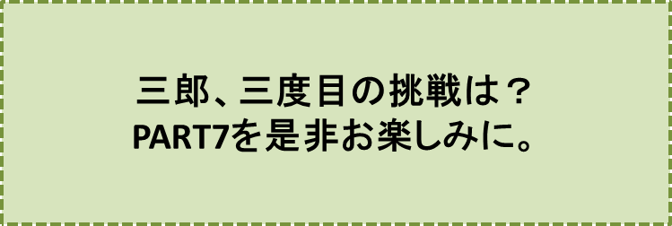

三郎と幸福のホテル-PART6-
『放浪の道』の巻
笠原正雄
太陽はますます高く昇ります。三郎の畑に惜し気もなく光を投げかけて麦を色づけ、三郎の皮膚をたくましく、そして健康な色に輝かせ、全てのものに生命を与える根源として、常に威厳を保ち続けてきた太陽が、今や彼の身体を衰弱へと導いています。彼は喉が渇いてきて、辺りに水がないか探し求めながら歩き続けます。
太陽がついに真上に昇って、更に意地悪く振舞いだすと三郎は、太陽がだんだん自分の側に近づいてくるのではないかと、感じ始めました。喉がからからになって、辛抱しきれなくなり夢中で水を求めましたが、小川や泉はどこにも見えず見渡す限り草、草、草の平原です。
“どっちに向いて歩いてみても、みな同じような感じだ”
彼は立ち止まり、辺りをあちこち見渡し、太陽を恨めしそうな顔付きで眺めました。この時、辺り一面が銀色に光って、くらくら目眩(めまい)がし始めました。
三郎は恐ろしくなって、狂ったように走り出します。
何キロも走ったように感じられたのですが、せいぜい数十メートルしか離れていない所で再び立ち止まりました。三郎は座りこみ、辺りを見回します。目の中に入るものは草、草、草……、草ばかりの野原、草の外には何も見当たりませんでした。
“水だ！ 水だ！ 水がほしい”
彼は叫びます。意識がともすれば無くなりがちになり、声ももはや出せなくなりました。
その時です。背に大きな荷物を背負った農婦が側を通りかかりました。三郎は最後の力を振り絞って声を出そうともがきます。
彼女が三郎に気付いてくれた時、彼は舌を出して、苦しそうな表情を見せました。彼にとってこれ以上のことは、もはや何も出来ませんでした。しかし、これで十分でした。
農婦は驚いて三郎を抱きあげ、すぐ又そこに寝かしつけ、大急ぎで走り去ります。
“あの人は、水を飲まさねば、もう数分と命が持たないに違いない”
農婦は、泉のある場所を知っていました。速い足でそして正確に、彼女は泉のそばにたどりつき、水桶にあふれる程の水を満たしました。冷たい泉の水が水桶一杯に満たされました。
農婦が再び三郎のもとに戻ってきたとき、彼はすでに意識がなくなっていました。
彼女は布を水にひたして、三郎の喉に、絞りこまねばなりませんでした。
二滴、三滴と冷たい水が、彼の渇ききった喉に入っていきます。
泉の水は不思議な魔法の力を持つ水のように、想像以上の力を与えました。
三郎は意識を取り戻し辺りを眺めました。天使のような女がそばに座って、布を水でひたして口の中に搾り入れてくれています。
三郎は思いました。
“水ほど尊いものはない。水は何と素晴らしく、何と美味しい飲み物なのだろう”
彼は、まるで母に甘える乳飲み子のように、口元に笑みを浮かべつつ、ほんの数滴ずつ水を飲みます。次第に太陽の暑さが苦にならなくなって、はっきり空の青、大地の緑を見ることが出来るようになりました。手をついて体を起こすことが出来るぐらいに快復したのです。
“あぁ、水は何と貴く、そして貴女(あなた)の心は何と美しいのだろう”
三郎は感謝の思いで一杯になります。助けてくれた女の太くたくましい腕が、陽にやけて気持のいい赤色になっています。
口もとに再び水で湿らされた布が近づいたとき、彼ははっきり意識を取り戻していました。
……しかし彼は、助かったという安心感と同時に、一つの得体の知れない寂しさが、自分の胸にこみ上げてくるのを感じました。
この寂しさは何だろう？と、考え込みます。やがて三郎は、命を救ってくれた若い女に胸の中を打ち明けようと思いました。
「有難う。もう私の力で水を飲むことが出来ます。しかし……、再び生きかえっても果たして幸福でしょうか。こうして貴女が下さった貴い水の力で、再び話をしたり物を見たりすることが出来るようになりましたが、それとともに、これ以上生きていても無駄であるようにも思われてきます」
彼は大空を仰ぎ見、そして大きくため息をついてから続けます。
「……どうか私を、このままそっとしておいて下さい。私は人生に破れた哀れな男なのです。
今日ここで死にかけた時、私の人生は、まるで砂漠の焼石の上に置かれた一滴(ひとしずく)の水のように、はかなく思われました。そして今もやはりそう思えて仕方ありません。
ここで神様が、もう一滴の人生を私に与えてくれたとしても、結局は、同じことのように思われます。生きて行こうという希望が、再び湧いてきそうもありません。
森や土地、畑をすっかり失ってしまったのです。全てを妻マンシャーニのため使いつくした挙句、生まれ育った村から逃げるようにして出てきた訳です」
三郎はここまで一気に言ってしまうと、一息ついでから、弱々しい声で続けます。
「……どうか私を、……このままにしておいて下さい」
「でも、貴方」
女は優しく、しかししっかりした口調で声をかけます。
「私の家にいらっしゃいませ。貴方は生きようとする力をきっと与えられるに違いありません。さぁこの水をもっとお飲みになって下さい」
三郎はしばらく考えていましたが、再び喉が焼けつくように渇いてくると、力なく水の所まで這っていき、水桶の上に覆いかぶさるようにして、ごくごくと喉を鳴らしながら飲み始めます。
確かに泉の水は、普通の水よりもっと大きい不思議な力を、彼に与えたようでした。水をたっぷり飲みたいだけ飲んでしまうと、以前の力が全身によみがえってきているように感じ、胸に僅かながらも希望の火が燃え始めました。
三郎は泉の水を飲みすぎるほどに飲んでいましたのに
“水ほど貴いものは、なかったのだ……”
と、強く印象づけられましたので、再び水桶の前に座りこむと、残っている水を全部飲み干しました。泉の水は、必要以上に、彼の身体に満たされたのです。三郎は空になった水桶を彼女に手渡し、低く頭を下げて言います。
「有難う。貴女の家に寄せて戴くことに致します。
……私は、今、申しましたように人生に敗れ、もはや住む家すらなくなってしまった男です。
せめて物乞いになる前にと思い、シオニー村から逃れるように出て来た者です。
でも今日、私は別の人間に生れ変ったような気がします」
農婦は日に焼けた顔をほころばせながら、三郎の言葉に一つ一つ優しく優しく頷（うなず）きながら聞いています。
「さぁ、参りましょう」
と、彼女は優しく声をかけ、はにかみながら三郎の手をとって、踊るような足取りで我家に向って歩き出します。
あぁ、しかし、どうしたことでしょう。三郎は歩くたびに泉の水がお腹の中で鳴るように感じ、子鹿のように軽やかに歩む農婦の足どりに合わすことが出来ませんでした。早く農婦の家につけばいいのにと心の中で強く願っていました。
三郎がやっとの思いでついた家は、野原の中にぽつんと立っている一軒家でした。
“なんと退屈な寂しい暮らしを、この女はしていることだろう。
こんな野原で、一人で生活するなんて、シオニー村の者にはとても考えられないことだ”
と、心の中でつぶやきながら招かれるまま家の中に入りました。
三郎を迎えた部屋は清潔そのものの部屋でした。真っ白なカーテンやテーブルかけには、垢一つ染み付いていませんでしたし、床は美しく磨きあげられ、チリ一つ落ちていなかったのでしたが、彼はそのことに、全く気づきませんでした。
“なんて小さな家なんだ”
三郎は、軽蔑の色を目に浮かべて辺りを見回しました。
再び神が、一滴(ひとしずく)の人生を与えてくれたことを、今はもう、感謝していませんでした。
つい先程農婦に語ったことも、ほとんど忘れていました。それは多分泉の水を飲み過ぎたためかもしれませんね。
彼は勧めてもらった温かいお茶を飲みながら、あらためて農婦を眺めます。農婦は日に焼けた太い腕をまくし上げるようにして、粗末な着物を着ています。
“この着物は、貧乏暮らしを訴えているような着物だな”
と、彼は苦笑いをします。
三郎は、この着物が非常に清潔なものであることも、見落としています。そして更に見落としているだろうことは、その着物がどんな汚れもつけないものであるということだったでしょう。
彼女が夕食の仕度を始めると、三郎は窓際の椅子に腰を下ろし、外を眺めました。窓の外は見渡す限りが、草々、草々でした。左手に小高い丘があって、その丘からは見通しがよく利きそうでした。
三郎は独り言を言います。
“こんな所でぐずぐずしている訳にはいかない。第二の人生が始まっているのだから……。
そうだあの丘の上に登って、周囲の地形をしっかり見ておこう”
三郎は
「ちょっと散歩に行ってくるからね」
との言葉を残して丘を目指しました。
丘の上から周囲を見渡すと、遥か東の方に大きな町が眺望できました。
“おゝ！大きな町が遥か彼方に見える！そうだ、あの町へ行こう。あの町で私の新しい人生が待っているような気がする。
破作郎が成功したように、大いにやってやろう”
太陽が地平線の彼方に沈んでいくのを見て、三郎は息を飲みます。
金色(こんじき)に雲が輝き、町全体が炎をあげて燃えているように見えます。
“火事だ！ 火事だ！ 大きな火事が町全体に起こっているように見える……”
その真っ赤な炎の中に、無数の小さなものがチカチカ光っているのに気付きました。
“建物の窓が、夕陽に光っている！ 素晴らしい！ 大都会の大きな建物の窓が、一斉に光り輝いている！”
昼間あれほど彼を痛めつけていた太陽が、今は熱を失った大きな火の玉となって、まさに地平線の向うに隠れようとしています……。
三郎はふぅと大きな溜息をついて、農婦の家に引き揚げました。
家には、ささやかな夕食の準備が出来上がっていました。
その食事は三郎の食欲をかき立てるには十分でした。彼は子供のように、がつがつと食べ始めました。
農婦も一緒に食べましたけれど、彼女は胸を張って、堂々とした振舞いです。食事のために姿勢が崩れてしまうようなことは、決してありませんでした。
遠くから見れば、大きな子供が食物に覆い被さるようにして食べている前で、堂々たる恰幅(かっぷく)の母親が、その子供の姿に温かく優しい眼差しを注ぎながら、食事をしているように見えたでしょう。
農婦は、三郎に向って諭すように言います。
「貴方、もしここが気に入って下さったら私と一緒にお暮らしになりませんか？
そうして下さったら私も嬉しく、より一層働き甲斐が出てくることでしょう。それに私はまだ独り身なのですよ」
三郎は驚きます。
“とんでもないことを言いだしたもんだ！ こんな場所で、どうして私が一生暮らせると言うのか”
彼は、こう思って、首を横に大きく振って答えます。
「いやいや、有難う。これは全くご親切なお言葉です。しかし私はもともと都会に憧れて、シオニー村から出てきたのです」
「でも貴方、大都会で暮らすのも、ここで暮らすのも、結局は同じことですわ。貴方自身、お昼間仰ったではありませんか。人生は砂漠の焼石の上に乗った一滴の水のようだと……。
それは、あなた自身が自分の人生をそういう風に考えられたからでしょ。けれど全ての人生がそうだとは言えません。貴方は人生という一滴の水を、どこの上に載せればよいのか、今はよく知っておられる筈ではありませんか。
都会で暮らすのと、この家で暮らすのと、どこがどう違いますでしょう？」
“ふん、この女は私を助けたことを、恩に着せようとしているのだ。だが、たった水桶一杯の水で、私の人生の全てを束縛されては全く堪らない”
三郎は、確かに泉の水を飲み過ぎていたに違いないでしょう。もう、すっかり感謝の気持ちを忘れてしまっているのですから……。
彼は返事もせずに黙って俯(うつむ)いていました。
“この女は私が黙っているので、私が考え直し始めたとでも思っているに違いない”
三郎は不安になり始めました。
農婦は、そんな三郎の気持を察することも全くない様子で、身体をテーブルの上に乗り出すようにして、言います。
「ねぇ貴方、私の夫になって……」
「とんでもない！」
三郎は、農婦の言葉が終わらないうちに思わず叫びました。
「とんでもない！ 私は、もう今直ぐにでも出掛けようと、思っているところなんだ。こんな所に長居はごめんだよ」
彼女は驚き、三郎にすがりつくように言います。
「でも、それはあんまり……」
「あぁ、なんてしつこいんだ！ きっぱり諦めて下さいよ」
女は黙って、三郎の顔を見詰めます。その彼女の態度が、一層、三郎を苛立たせました。
太すぎると思われる彼女の腕が、益々太くなって、いつの間にか自分をしっかりつかんで、離さないでいるような気がしました。
「あぁ、なんて嫌な奴だ！ なんて嫌な女だ！」
三郎は思わず叫びます。
どうしたことでしょう。農婦が、急ににこにこほほ笑みだしたのです。その笑い方が、あの“つまらぬ奴”に次第にそっくりになってきます。
三郎は、はっと思って頭をかかえます。
“見るまい！ あいつだ。私はまたも失敗してしまった”
三郎が、恐れた通りでした。うつ伏せたまま、かたくなに顔を上げようとしない三郎の前に、あの“つまらぬ奴”が立っています。
“つまらぬ奴”は、三郎の畑に初めてやってきたときと同じように優しい笑みを口元にたたえて、彼の肩を軽く叩きます。
「……これで二度目だったね。残された一回、最後の一回として与えられる機会を、失わないようにするがいい」
三郎は頭を抱え、やはり、顔を上げようとしませんでした。
♪♪♪♪コーヒーブレイク♪♪♪♪
